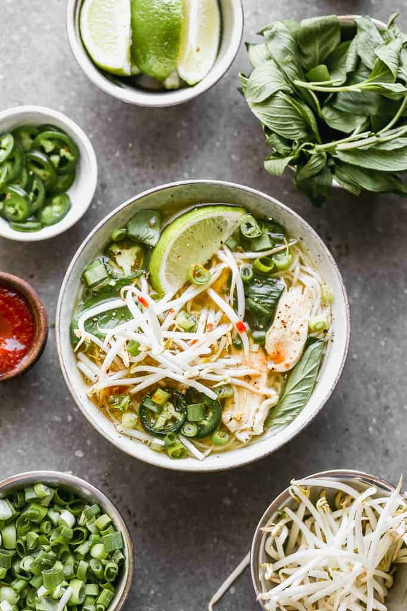

Pho

Description
Pho (pronounced “fuh”) is a Vietnamese noodle soup that’s made with broth, rice noodles, meat, and fresh garnishes. Authentic versions take much more time and love than this recipe. But if you're looking for a quick version with similar warm, fresh and comforting qualities, this is what I make my family at home!
Ingredients
- 8 oz dried rice vermicelli noodles
- Desired meat: chicken, pork, steak or raw shrimp
- 1 large yellow onion , quartered
- 2 (2-inch pieces) fresh ginger , unpeeled and halved, length-wise
- 6 cups broth (chicken, beef or vegetable, depending on protein choice)
- 2 cups water
- 1/4 tsp ground coriander
- 1 whole clove (optional)
- 1 1/2 Tablespoons fish sauce (or less, to taste preference)
- ¼ teaspoon hoisin sauce
- 1/4 teaspoon soy sauce
- ¼ teaspoon red chili paste (sambal oelek)
- 1 stick cinnamon
- salt and freshly ground black pepper
Instructions
- Place a large dry pot over medium heat add the onion halves and ginger pieces. Cook for 4 minutes, stirring occasionally.
- Add the broth, water, coriander, clove, fish sauce, hoisin sauce, soy sauce, chili garlic paste, cinnamon stick and a pinch of fresh cracked salt and pepper to the pot. Bring to a slow boil, then reduce heat and simmer for 30 minutes.
- Meanwhile, prepare noodles according to package instructions. Once soft, drain, rinse and set aside.
- Ready the garnishes in individual small bowls for serving: cilantro, basil, green onions, bean sprouts, lime wedges and sliced chilies.
- 1-5 minutes before the broth is done cooking, add desired meat to the broth to cook, just until done (2-3 minutes for raw, thinly sliced chicken or pork, 1-2 minutes for shrimp or thinly sliced steak).
- Discard the ginger, clove, cinnamon stick and onion pieces from the pot.
- Divide the noodles among bowls; ladle broth on top (and meat). Add desired toppings.
Back to main page